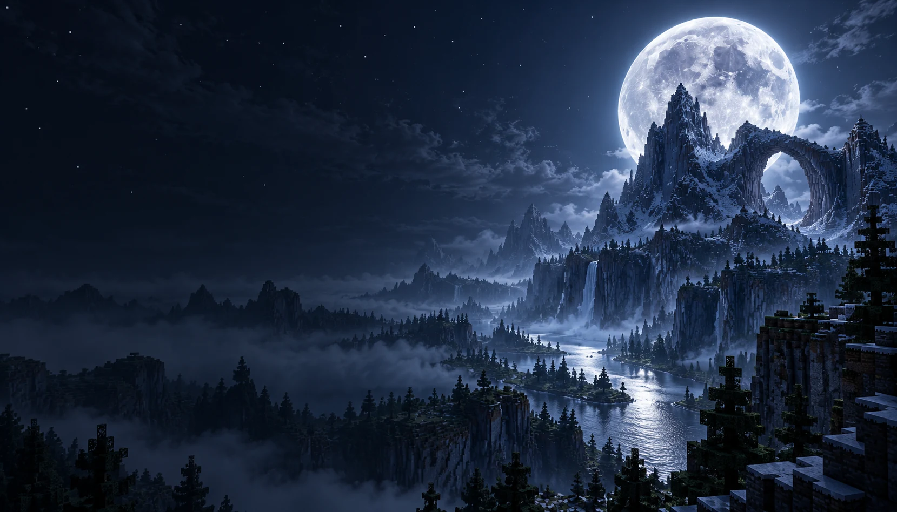
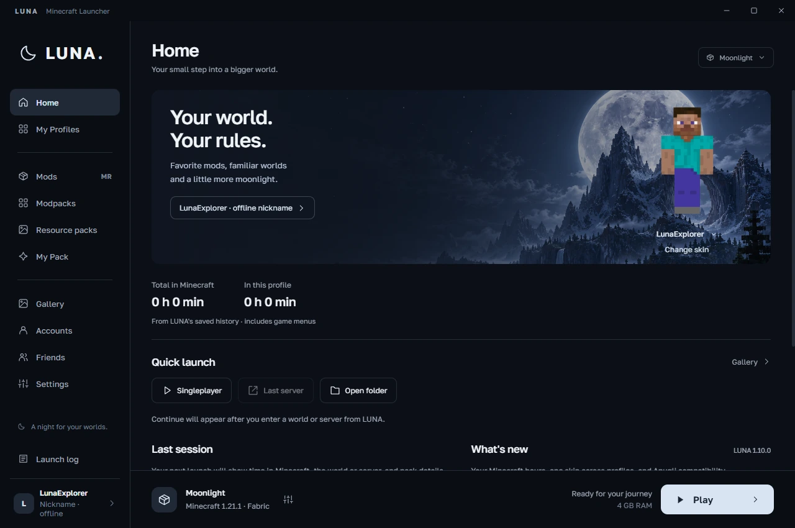
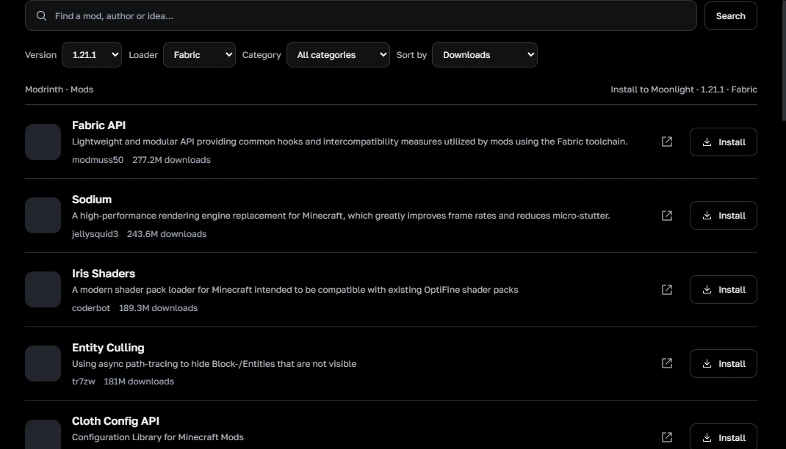

A place for every playthrough.
Keep worlds, mods and settings together in separate profiles. Pick Minecraft and your loader, with Java prepared automatically.

Minecraft, your way. Bring your favorite mods, find your friends and make yourself at home in LUNA.
v1.10.0Windows 10 / 11 · x64Free launcher
Made for Minecraft Java Edition
A clean workspace for your worlds. Choose the atmosphere; everything stays right where you expect it.

Find mods, resource packs and complete modpacks on Modrinth without leaving your launcher. Filter by Minecraft version and loader, then add them to your own profile.

Keep worlds, mods and settings together in separate profiles. Pick Minecraft and your loader, with Java prepared automatically.
Create a LUNA account, add friends by nickname and see their game status. Microsoft login and offline nickname profiles are available for Minecraft.
Browse your Minecraft screenshots, turn one into a launcher background and follow your playtime across sessions.
Choose NeoForge in your profile, browse compatible Modrinth content and import NeoForge modpacks with their exact loader version.
LUNA checks identical JARs before launch and disables extra copies. The original files stay in your pack folder.
Choose from the full official Minecraft version list, including snapshots, beta and alpha. Available loader builds follow the version you select.
A few things to know before you launch.
Yes, the launcher is free to download. Signing in with Microsoft uses your Minecraft Java Edition license. A nickname profile can play local worlds and servers that allow offline accounts.
LUNA is built for Windows 10 and Windows 11, 64-bit. Java is downloaded for your selected Minecraft version. Game and modpack requirements depend on what you choose to play.
Each loader has its own supported versions. LUNA looks up available Fabric, Forge and NeoForge builds for the Minecraft version you choose. The full Minecraft list is available for selection, but every historical release has not been tested individually.
LUNA installs compatible skin support when it is available for the profile. Other players need compatible skin support too. Change your skin in LUNA, then restart Minecraft; results depend on the game version, mods and server.
Install LUNA once and use its installed shortcut. The launcher checks published updates and can download them in the background. Your profiles and worlds stay on your computer.
Identical files are handled automatically. Different versions of the same mod can still conflict: open My Pack and keep the compatible version. LUNA’s pack check can point you to the files; it does not guarantee that every mod combination works.
A familiar world. A fresh collection of mods. A little moonlight.
Download for WindowsClose Minecraft and LUNA, run the installer, then use the LUNA shortcut.
Other releases and startup help